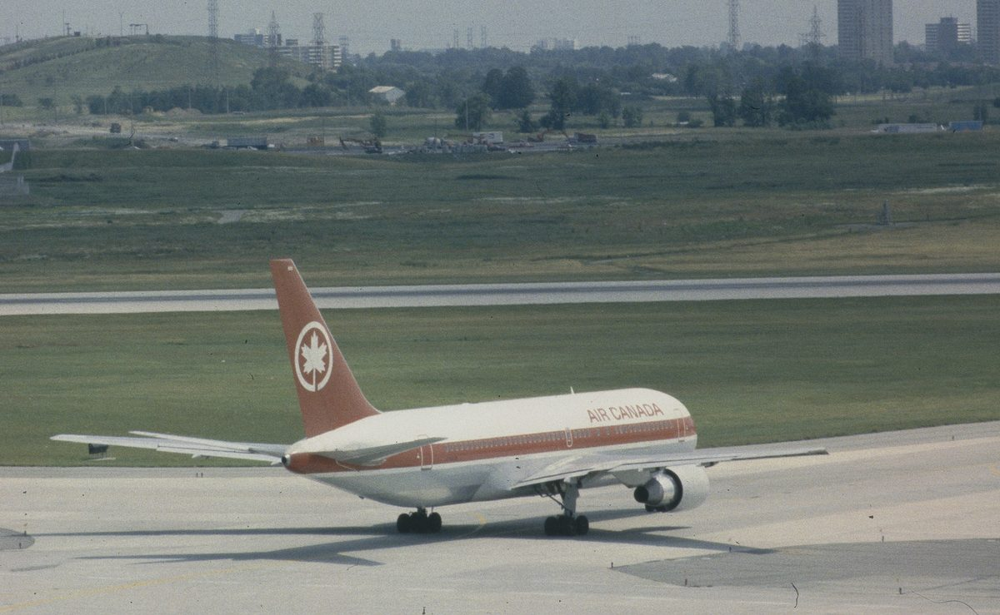
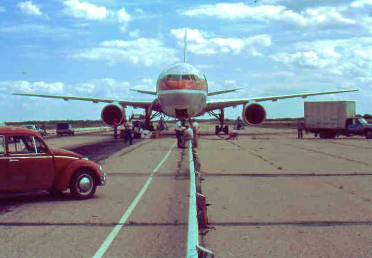
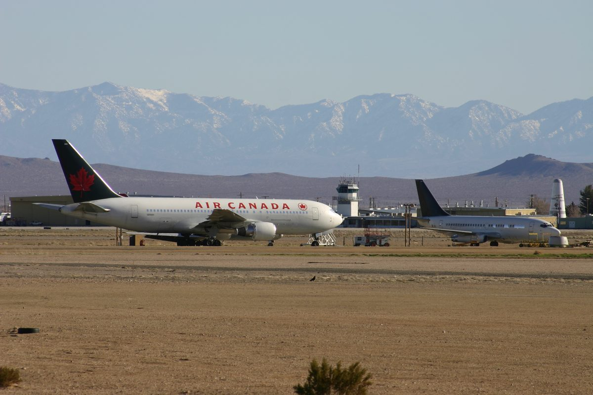

On July 23, 1983, a Boeing 767 ran out of fuel at 41,000 feet over Manitoba with 69 people aboard, and became, for seventeen minutes, the largest glider ever flown by an airline pilot. The captain's only relevant qualification for what happened next was a hobby: he flew gliders on his days off.
Air Canada Flight 143 was a routine, three-leg domestic run: Montreal to Ottawa to Edmonton, flown that Saturday by one of the newest, most advanced aircraft in the airline's fleet.
In command was Captain Robert “Bob” Pearson, 48, with roughly 15,000 flight hours. Beside him sat First Officer Maurice Quintal, 36, a former Royal Canadian Air Force pilot. Behind them, six cabin crew looked after 61 passengers, 69 people aboard in total. The aircraft was a Boeing 767-233, registration C-GAUN, fin number 604, one of Air Canada's first 767s and the first aircraft in the airline's fleet to measure its fuel in kilograms and litres instead of the pounds every other aircraft Air Canada flew still used. Canada's aviation industry was only partway through switching to metric, and the 767 was the leading edge of that change.
The trouble had actually started the night before, in Edmonton, when a fault made the aircraft's electronic Fuel Quantity Indicator System (FQIS) go blank. A technician did exactly what procedure called for: pulled and tagged the circuit breaker feeding the failed channel, formally deferring the repair. In Montreal the next day, a second technician briefly reactivated that same channel to test it, then got called away before restoring the tag properly. Nobody who came after him could be entirely sure, from the paperwork alone, whether the gauges might actually still work. Rather than risk it, the flight crew and ground staff fell back on the aircraft's oldest, least automated backup: measuring the fuel by hand.

What happened next wasn't one person's mistake. It was the same wrong number, used by several different qualified people, at two different airports, because nobody had been trained to use a different one.
With the electronic gauges considered unreliable, ground crew measured fuel the old way: a metal dripstick dipped into each wing tank gives a depth reading, converted via a chart into litres. That's a volume, not a weight, and weight is what actually matters, for the aircraft's structural limits, its performance, and how far it can fly. Converting litres to kilograms requires one more number: the fuel's density.
The 767 was Air Canada's first aircraft to use a metric density figure for this exact conversion: 0.803 kilograms per litre. Every fueler and pilot at the airline had spent their whole career using 1.77 instead, an imperial pounds-per-litre figure baked into the fueling paperwork for every other aircraft Air Canada flew. Multiple people, independently, reached for the number they already knew.
Flight 143 needed 22,300 kg of fuel for the trip. With 7,682 litres already aboard, converted correctly (×0.803) that's about 6,169 kg, meaning roughly 16,131 kg still needed to be added. Using 1.77 instead, the same 7,682 litres was read as 13,597 kg already aboard, so ground crew topped up only about 4,917 more litres. Flight 143 left Montreal with roughly 10,100 kg of fuel: less than half of what it actually needed.
At the Ottawa stop, someone re-checked the fuel the same way, with the same factor: 11,430 litres was logged as roughly 20,400 kg. The true figure was closer to 9,250 kg. The one check built into the process that could have caught the error instead just confirmed it, and Flight 143 pushed back for Edmonton believing it had enough fuel for the whole route.
An hour into the Ottawa–Edmonton leg, cruising at 41,000 feet over Red Lake, Ontario, Flight 143's fuel simply ran out.
Flight 143 levels off on the Ottawa–Edmonton leg. Nothing about the flight looks unusual from the cockpit or the cabin.
A tone neither pilot could recall hearing before, not even in the simulator, sounds alongside a warning light for low fuel pressure in the left engine's fuel pump. Both men initially suspect a pump fault rather than fuel starvation; their own numbers say they have plenty of fuel left.
Captain Pearson begins diverting toward Winnipeg, the nearest airport equipped to handle a widebody jet, and starts down.
About 65 nautical miles from Winnipeg, the second engine dies too. Total loss of thrust, on a Boeing 767, at cruise altitude.
Main aircraft power fails with both engines gone. A Ram Air Turbine, a small propeller-driven backup generator, automatically drops out of the belly of the 767 and begins spinning in the airstream, supplying just enough hydraulic and electrical power to keep basic flight controls and a handful of standby instruments alive.
The Boeing 767 had never been certified, tested or trained for a complete dual-engine flameout at cruise altitude. There was no procedure in the manual for exactly what was now happening, and no simulator had ever modeled it either.
Everything Flight 143's crew needed for the next seventeen minutes came from two backgrounds that had nothing to do with flying a Boeing 767.
48 · 15,000 Flight Hours · Recreational Glider Pilot
He flew gliders on his days off.
36 · Former Royal Canadian Air Force Pilot
He remembered a runway that wasn't supposed to matter anymore.
For years, entirely apart from his day job flying airliners, Pearson had flown sailplanes for fun: unpowered gliders, towed aloft and released to ride air currents back to the ground. Gliding teaches a pilot to think constantly in terms of glide ratio, exactly how much forward distance a given amount of altitude buys you with no engine running at all, a skill airline pilots essentially never need. It also teaches genuinely rare maneuvers, like deliberately increasing drag on final approach by crossing the flight controls against each other, for precisely the moment Pearson was about to need one.
Years earlier, Quintal had trained at RCAF Station Gimli, a Royal Canadian Air Force base in Manitoba that had since been decommissioned. As he and Pearson worked out whether Winnipeg was actually reachable on the altitude and distance they had left, Quintal ran the mental arithmetic and concluded it probably wasn't. He suggested Gimli instead: an old airfield he knew had existed, that he had no current information about at all.
For the next seventeen minutes, a 132-ton Boeing 767 carrying 69 people flew roughly 100 miles with no engines, no autopilot, and instruments running on a trickle of emergency power.
With both engines gone, Pearson had only a handful of battery- and RAT-powered instruments to work with: airspeed, altitude, basic attitude information, nothing resembling the normal, fully computerized 767 flight deck. There was no power for autothrottle and no meaningful autopilot, and no guidance at all for the one flight condition the aircraft had never been designed around.
He targeted roughly 220 knots by feel, faster than a sailplane's usual minimum-sink speed, because a 132-ton jet gliding “dirty,” with its landing gear and airframe drag factored in, behaves nothing like a sailplane. In one measured ten-nautical-mile stretch of the descent, the aircraft lost about 5,000 feet: a glide ratio of roughly 12-to-1, well short of the 767's theoretical best of around 20-to-1 under ideal conditions, but still enough distance to reach a runway they weren't at all sure, on paper, they could reach.
Quintal worked the numbers throughout, calling out distance and altitude options while Pearson flew and cabin crew began preparing 61 passengers for a landing nobody could yet say for certain would be at an airport at all.
Winnipeg was the obvious first choice, the nearest airport equipped for a widebody jet, but Quintal's math said it was too far away on the altitude they had left. Gimli, an old air force runway roughly 65 nautical miles closer, became the only real option.
Neither pilot knew, as they lined up on final approach, exactly what they were about to fly into.
RCAF Station Gimli had been a Royal Canadian Air Force base and pilot training airfield until it was decommissioned in 1971. Part of its old runways stayed in limited use as a small civilian airport. A separate stretch of the same old tarmac had been converted into Gimli Motorsports Park, complete with a quarter-mile drag strip built straight down what used to be a military runway, guardrail and all.
July 23, 1983 happened to be a Saturday, and the Winnipeg Sports Car Club was holding a sanctioned race day at the strip: cars, campers and families spread along and around the old runway, with kids on bicycles near the pavement. Nothing on the schedule had anything to do with an inbound emergency.
As Flight 143 dropped out of the sky toward the strip, silently, since there were no engines left to make any noise at all, people on the ground had almost no warning it was coming. Pearson and Quintal, from the cockpit, spotted children on bicycles within roughly 1,000 feet of where the aircraft was going to touch down. There was no way to warn them, and with no engines, no way to go around and try again either.
Two feet above the runway, with the aircraft still coming in too high and too fast, Captain Pearson did something almost no airline pilot ever does in a jet: he crossed the controls.
Facing a landing without engines and without hydraulically powered flaps or speed brakes, Pearson flew a forward slip: rudder deflected one way, ailerons the other, deliberately increasing drag to bleed off the extra altitude and speed the approach had left him. It's a maneuver every glider pilot learns and one that almost no airline training program teaches, since it's rarely if ever needed on a powered jet.
A teenager watching from the ground, Art Zuke, described what he saw to AOPA Pilot magazine years later, in about as plain a description of a 132-ton aircraft in a sideslip as exists.

I saw this thing flying sort of sideways and cockeyed…
— Art Zuke, eyewitness on the ground at Gimli, quoted in AOPA Pilot, July 2000Two mechanical facts turned out, by pure chance, to help rather than hurt. Without hydraulic pressure to fully lock it, the nose landing gear failed to lock down, and the old drag strip's center guardrail, installed to separate racing lanes and having nothing to do with aviation, ran directly down the runway Pearson didn't know was there until he was already on it. On touchdown, the main gear tires blew out from the hard, fast landing. The unlocked nose gear collapsed, driving the nose of the aircraft into the pavement, throwing sparks and grinding along the tarmac, extra friction that actually helped slow the aircraft down. Pearson worked the brakes hard, using the guardrail almost as a physical rail to keep the aircraft from drifting toward the crowd, and brought all 132 tons of it to a stop roughly 500 feet from the nearest spectators and race cars. Racers and course workers ran over with handheld fire extinguishers and put out a small fire near the nose before it could spread.
Evacuating down the aircraft's slides, tilted at an unusual angle because the collapsed nose had pitched the tail higher than normal, turned out to be the most dangerous part of the entire afternoon: about ten people were hurt, minor injuries only, in the scramble down slides that were suddenly too short for the height. All 61 passengers and all 8 crew survived. Nobody died.
A Board of Inquiry led by Judge George H. Lockwood of the County Court of Manitoba investigated under Canada's Aeronautics Act, submitting an interim report in June 1984 and a final report in April 1985. Its conclusion was almost mundane, next to what it had produced.
The core error was the 1.77-versus-0.803 mixup described above, used correctly, out of habit, by everyone involved, for the one new aircraft in the fleet where it was wrong. No single person invented the mistake. Several different qualified people independently reproduced it.
The FQIS breaker mixup in Montreal, a channel briefly reactivated to test, then not properly re-tagged, meant nobody could be entirely certain from the paperwork whether the electronic gauges might actually have worked. That uncertainty is what pushed the crew toward the manual, error-prone dripstick method in the first place.
Air Canada was flying a mixed fleet in 1983: the new 767 in metric units, everything else still in pounds. Ground and flight crews moved between aircraft that measured the exact same substance in two different unit systems, without, at the time, a fully standardized safeguard to keep the two straight.
Investigators found Air Canada had never clearly assigned responsibility for independently verifying the fuel load in an abnormal, gauge-inoperative situation like this one. Older aircraft carried a flight engineer whose job included exactly this kind of check; the 767 was designed to fly with two pilots and no flight engineer, and the airline hadn't fully worked out who was supposed to confirm a number like this when the automated system went down.
Air Canada… neglected to assign clearly and specifically the responsibility for calculating the fuel load in an abnormal situation.
— Board of Inquiry Final Report, Judge George H. Lockwood, 1985The Gimli Glider changed how the aviation industry verifies fuel loads by hand, and gave two disciplined pilots one of the highest honors in aviation within two years of nearly losing their careers over the same flight.
In the immediate aftermath, Air Canada disciplined the people closest to the error: Captain Pearson was demoted for six months, First Officer Quintal was suspended for two weeks, and three maintenance staff were also disciplined, all for operating an aircraft without functioning fuel gauges. Appeals later reversed or reduced most of those penalties, and both pilots returned to flying for Air Canada. In 1985, Pearson and Quintal received the first-ever Fédération Aéronautique Internationale Diploma for Outstanding Airmanship, aviation's own acknowledgment that the same flight had been both a corporate failure and a genuine feat of flying.

Air Canada and the wider industry tightened fuel-verification procedures around metric transitions and manual dripstick checks, clarified exactly who is responsible for independently confirming a fuel figure when automated gauges are down, and formalized circuit-breaker deferral and tagging discipline so a component reactivated “just to test it” can't quietly be mistaken for one still safely disabled.
Flight 143 remains a fixture of crew resource management and dual-engine-failure training decades later. When other Air Canada crews were later run through the identical scenario in a simulator, several of them crashed, underlining just how narrow the actual margin was, even with the benefit of already knowing what was coming.
Repaired first at Gimli and then fully at Air Canada's Winnipeg base, C-GAUN returned to revenue service under a nickname that stuck for good, and kept flying in Air Canada's colors for another 25 years before its final commercial flight on January 1, 2008.
Retired to storage at Mojave in early 2008, C-GAUN went unsold at a 2013 auction, bidding stalled around CA$425,000 against an estimated CA$2.75–3 million, and was scrapped the following year, its aluminum fuselage cut into thousands of individually numbered luggage tags sold as collectibles.
A dedicated Gimli Glider exhibit opened in the town itself in June 2017. In June 2025, the recovered cockpit section of C-GAUN was transported back to Gimli and reunited, at a public ceremony, with Captain Bob Pearson, forty-two years after he landed it there.
Every fact in this case file was cross-referenced against at least two independent sources, anchored by the official government investigation. All links open in a new tab.
Judge George H. Lockwood's complete 1985 final report, commissioned under Canada's Aeronautics Act, mirrored on a U.S. federal government domain.
The FAA's official case documents and safety-lessons page for this accident.
An independent professional pilot reference site's technical case-study breakdown of the flight.
CBC's Manitoba retrospective on the flight and the metric conversion error behind it.
CBC's 40th-anniversary coverage, following up with Captain Pearson and one of his passengers.
Aircraft Owners and Pilots Association feature covering the flight in detail, source of the eyewitness quote used above.
An independent, well-researched long-form retelling, source of several cockpit and landing details used above.
Used as a secondary cross-reference for names, dates and figures, not as a primary source.